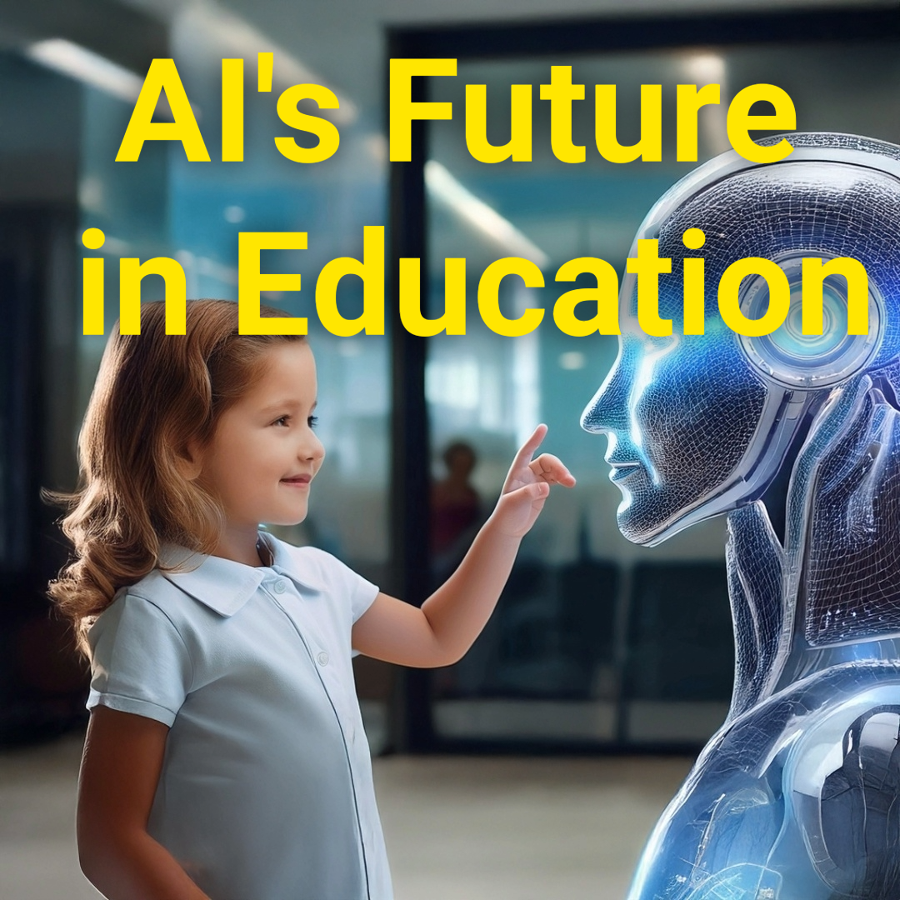

#298 Ripensare l'istruzione: La rivoluzione dell'IA
Sblocca il Futuro dell'Istruzione con l'AI: In questo intrigante episodio di "Abbracciare la Trasformazione Digitale", l'ospite Dr. Darren dialoga con l'educatore e architetto del curriculum Kevin Rush per esplorare l'impatto rivoluzionario dell'inte..
Guarda Ora Ascolta Ora
#297 Il Mito dell'Intelligenza Artificiale Facile: Cosa Continuano a Sbagliare i Leader
Tutti corrono per implementare l'IA — ma pochi riescono. Il Dr. Ashwin Mehta, Fondatore e CEO di Metrology, sostiene che il maggior ostacolo non sono i dati o gli algoritmi — è l'illusione della semplicità. In questa conversazione perspicace con il ..
Guarda Ora Ascolta Ora